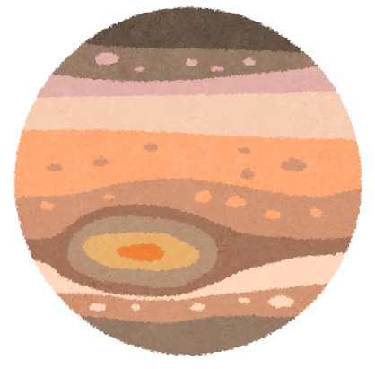
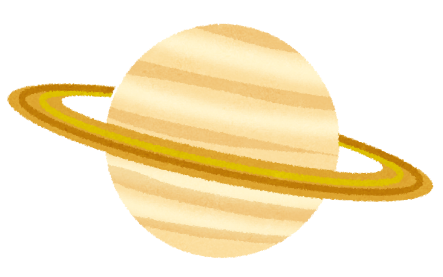
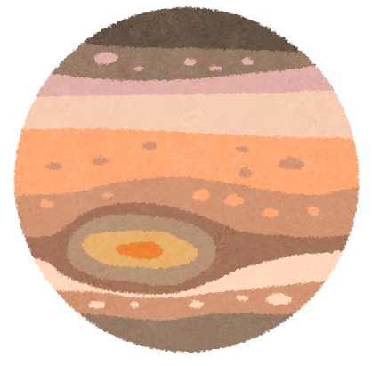
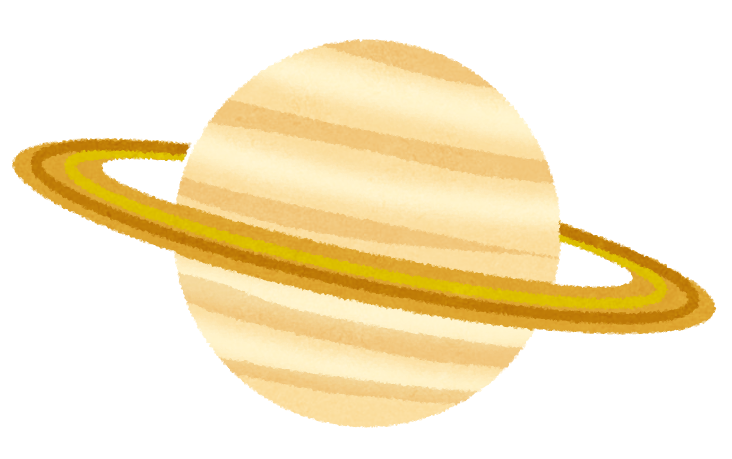

Number1: Universe
前回、丸を回転させる方法を発表した際に、木田さんからアドバイスいただき、
面白い回り方していたので、宇宙の惑星を実現したいと思い、実行に到りました。
 



Number2: Modal window
前回CSSでモーダルウィンドウを作成したが、今回はJSでモーダルウィンドウを作りました。
感想：やっぱりCSSでモーダルウィンドウを作るより、CSSは装飾、JSでは挙動とファイルを分けれるので、理解しやすかったです。
ポイント：×ボタンだけではなく、モーダルウィンドウの外の部分をクリックしても、モーダルウィンドウが閉じるようになっているのがポイントです。
Number3: Checkbox
ラジオボタン→1個だけ選択、チェックボックス→複数選択可能（何個でも選択可能）だったかと思いますが、
チェックボックスの個数制限（〇個まで選択可能）がJSでできたので、シェアしたいと思いました。
※チェック2個まで
感想：簡単そうなのに、こんなに記述を書くんだと驚きました。
Omake: background
headerの背景について：コチラの プラグインで実現しました。
右上の「default」を「NASA」に変更すると、宇宙とかもあって面白かった。
参考にしたコードペン（manaさん） 使い方サイト
問題点：canvasの高さがおかしい。装飾部分がトップの100vhしか反映されない。
canvasのwidth,height属性を設定しても、ネットで調べたjsを設定しても、何をしても解決できなかった。
縦幅を変えるには、アスペクト比の変更を行わないといけないみたいだった。
本来なら、CSSでhtml,body{height:100%}で全体にかかるはずなのに・・・。